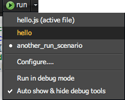
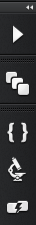
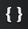
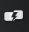

Running and Debugging Your Code
Cloud9 IDE provides several ways to run and debug your code. We'll explore each of them in this section of the documentation.
Note:
Currently, only Javascript/Node.js applications can make use of the debugger. You can also execute Javascript/Node.js, Python, Ruby, and Apache+PHP applications.The following information applies to all of the above programming languages.
Running Code
Running your code in Cloud9 is really easy. First, open the file you want to run. Usually, this file is going to be the main entry point to your app; for example, if you're creating a server, you'd want to run the file that actually instantiates that server.
There are two ways to run your code: either through the Run Panel, or through the run button in the menu bar.
Using the Run Panel
Next, click on the Run button in the project bar. You'll notice immediately that your active file is already available to run. Just double-click on the file, and you'll launch your app.
When you're ready to stop your app, click on the  button in the menu bar at any time.
button in the menu bar at any time.
At the bottom of the run panel, you'll notice a few more options you can set. Filling these textboxes out creates a run scenario, which is like setting up some configurations for the way your code runs. These options are:
- Name the name of your run scenario
- File Path: the location of your running file in your project
- Runtime: defines how you want your code to be run. Typically, you'd set different runtime versions here.
- Cmd Line Args: allows you to provide any additional command line arguments you want to pass to your app
Of course, you can also save your run scenarios; just click on the add button at the top of the panel. When you're ready to run a scenario, click on its name in the Run panel list. To remove a run scenario, click on its name in the run panel list, and then click on the remove button.
Using the Run Button
The run button in the menu bar acts as a sort of short cut to the Run panel. When clicked, the button automatically runs the currently active file. If you have a list of run scenarios already defined, the run button also presents a list of those:

Run in debug mode indicates that you want to run the current code through the debugger. Auto show & hide debug tools will reveal (or collapse) the debugging tools panel described below. You can also work with this presentation by going to , and configuring the debugger there.
Console Output
Every time you run a project, the console expands to reveal output from your program. If you're launching a server, Cloud9 provides you with a URL to access the project. Otherwise, any statements sent by your application's print statements (like console.log() for Javascript, print for Python, or puts for Ruby) are also shown here. For example:
Debugging Your Code
Setting up a project to debug is done in very much the same way as running your code. The only difference is that you must click on the run settings icon in the Run panel  and select Run in debug mode. Similarly, you can select Run in debug mode from the run button.
and select Run in debug mode. Similarly, you can select Run in debug mode from the run button.
Initially, the only difference this will make is the expansion of the debugging toolbar to the right of the editor:

This toolbar, however, grants you the following capabilities:
| Toolbar Icon | Debugging Function | Description |
|---|---|---|
| Debugging Navigation | This is a set of tools you can use to move around your code while debugging. You can step into, over, and out of your code, or simply press play to run the process until the next breakpoint. | |
| Callstack | This is a structured list of information about the sequences of your code--basically, which functions are calling what, and where you are in the current process. It also stores local variables and function arguments, if present. You can use this feature to check how your code is running: |
|
|  | Interactive Mode | Lets you evaluate a piece of code, such as expressions or the values and properties of variables. The text field allows you to type any code you want, in case you discover a way to fix you problem:
 |
| Variable Inspection | This shows all the related variables (including functions) that are present in the current context:
 |
|
|  | Breakpoint List | At any point during your coding or debugging session, you can click on the gutter to apply a breakpoint: |
While debugging, you also have the power of the live inspector. While hovering over a piece of code in the editor, you'll instantly get some floating text that describes the values of that variable, similar to Variable Inspection.